摘要 多个大语言模型 Agent 在同一套工具与文件系统上长期协作时，会不会自发形成一套共享的工作语言？本文以一套真实生产级估值表解析系统为自然实验：2026 年 11 月 4 日至 11 日，主 Agent、解析 Agent、核验 Agent 与只读 Watchdog 在 8 天内处理 123 个产品、43,870 份估值表，产生 2,202 个会话、110,413 条消息、116,131 次工具调用与约 96.4 亿累计输入 token（上下文重复计费口径）；主会话中只有 1 条人类消息。本文把“语言”操作化为词汇、形态、句法、语用、社区五个层次，结合种子词表过滤、双实例审读词表、角色分类器、带零模型的 Jensen–Shannon 散度、通信压缩指标与工具名变异分析，得到四个发现。第一，存在双向扩散的操作性词表：69 个审定词项中 64 个被四个 Agent 共用，39 个先现于主 Agent 派工，28 个先现于子 Agent 报告。第二，角色方言呈梯度结构：Watchdog 的 JSON 判决语域高度可识别（F1=0.932），解析与核验语域中度重叠（F1=0.651/0.698），主 Agent 则是调度语汇与子 Agent 语汇的拼装体（F1=0.332）。第三，语言没有整体趋同：24 小时窗下主—核验、主—Watchdog 的超额散度显著下降（通过 FDR 校正），解析—核验无显著趋势。第四，通信呈“语域强化”而非简单压缩：派工行话密度随 job 顺序上升（ρ=0.638/0.614），文本长度未降，模板相似度反降。本文还记录了一个词汇病理案例：非官方工具名 valution 在 4.6 天内被调用 2,283 次、全部失败、消耗 2.49 亿输入 token（占峰值日 23.8%）；主 Agent 的 2,277 次调用构成跨 9 小时的 50 个爆发，其中 49 次由同一条系统空闲提醒重新触发，呈现语义漂白与上下文自激。这套语言是工具约束下的“操作性混合语（operational pidgin）”与角色社会方言，而不是完整自然语言；它既降低协调成本，也可能把系统拖入高成本的词汇陷阱。
关键词 多智能体系统；语言涌现；大语言模型 Agent；操作性混合语；角色方言；工具调用；语义漂白；生产实证
2026 年 11 月 4 日 07:32（UTC），一套估值表解析系统在一台 Windows 主机上启动。它的任务很具体：把共享目录中的 Excel 估值表解析成结构化的净值、持仓、资金、费用与科目数据，经过解析者自检、核验者独立复核后，发布为不可变 release，再按产品、格式签名和日期时段绑定到日常解析流程。
系统里有四个 Agent：
valuation_trial。valuation_validate，可以驳回。它们之间没有自然语言聊天室。主 Agent 通过 subagent 工具派工；子 Agent 在独立会话中工作；它们共享代码目录、data/jobs/ 证据目录、JSON 报告和 SQLite 数据库。人类只在最后出现了一次，问：“现在还有哪些任务没有完成”。
8 天后，系统留下了 110,413 条消息、116,131 次工具调用和 9,643,030,091 个累计输入 token。更重要的是，它留下了一套在提示词里没有写过的说法：
“本回合=单发终局重放，零检测零循环。”
“本轮只允许一刀 + 一发…… PASSED 即停…… 红 → 停手，把三方对账回帖交主 agent 直裁。”
“shell 沙箱在收尾阶段返回……（会话任务已收口）。”
“零白名单、零位移豁免、零 Counter 吞并注释在位。”
这些词不是产品需求文档里的术语，也不是模型厂商的提示词模板。它们是 Agent 在 8 天里，围绕失败、证据、裁定和收口，逐渐磨出来的一套工作语言。本文要研究的，就是这套语言如何出现、如何扩散、如何分化，以及它什么时候有用、什么时候有害。
多 Agent 大语言模型系统正在从演示走向生产。AutoGen、MetaGPT、CAMEL、ChatDev 等系统展示了多角色协作的潜力，但大多数研究关注任务成功率、编排框架或提示词工程，较少把 Agent 之间的“通信内容”本身当作经验对象。与此同时，真实生产系统里的 Agent 往往不是通过自由对话协作，而是通过工具调用、文件、JSON、代码和数据库协作。通信被压缩成一条窄带：主 Agent 写一段派工，子 Agent 读文件、跑脚本、写报告，主 Agent 再读报告、做裁决。这种窄带既是效率来源，也是语言产生的选择压力。
如果 Agent 只是重复提示词里的词，那没什么新鲜。但在这套系统里，我们观察到三种提示词之外的现象：
收口、单发、对账、红位、终壳、零位移 等词，在提示词中没有定义，却在四个 Agent 之间传播，并获得稳定的语用功能。valution 这个不存在的工具名被调用了 2,283 次，全部失败；词形存活 4.6 天，其中主 Agent 的 2,277 次集中在 9 小时内，消耗 2.49 亿输入 token。它不是“有效的语言”，但它是语言演化的一部分：一个词形可以在负反馈下存活，甚至扩张到吸收多个工具的语义。这三种现象放在一起，说明“语言”不只是沟通的装饰，而是多 Agent 系统的基础设施，也是故障的载体。研究它，既能帮助我们理解 LLM Agent 的群体行为，也能帮助工程师设计更安全的工具命名、协议校验和循环中断机制。
本文提出六个研究问题：
本文的贡献有四：
valution 的语义漂白与外部空闲提醒起搏的 2,271 次重复环。第 2 节回顾相关工作；第 3 节描述研究现场、模型、工具和时间线；第 4 节说明语料构建、清洗、种子词表、词项审定和统计方法；第 5 节报告 RQ1–RQ6 的结果；第 6 节给出五个可追溯的案例；第 7 节讨论机制、语言类型和设计启示；第 8 节讨论有效性与局限；第 9 节总结。附录给出数据字典、提示词/工具清单、补充表和复现说明。
“涌现通信”（emergent communication）研究通常让多个神经网络 Agent 在 Lewis 游戏（Lewis, 1969）、指称游戏或合作任务中从零学习通信协议。经典工作包括 Foerster 等（2016）的深度多 Agent 通信、Sukhbaatar 等（2016）的通信层、Havrylov 与 Titov（2017）的符号序列游戏、Lazaridou 等（2017）的多 Agent 合作与自然语言涌现、Mordatch 与 Abbeel（2018）的 grounded compositional language。Rita 等（2022）分析了 Lewis 游戏中协议的泛化与过拟合，Mikhaylovskiy（2023）给出了该领域的综述。
这些研究揭示了几个稳定规律：通信压力、环境结构和种群规模会塑造语言的组合性、压缩性与歧义性；纯端到端训练的语言往往缺乏人类可解释性；语言可能“涌现”，但不一定“自然”。Kottur 等（2017）甚至指出，在多 Agent 对话中，自然语言不会“自然地”出现，除非任务和架构施加约束。
本文与这类研究共享“语言是协作压力的产物”这一基本假设，但对象不同：这里的 Agent 不是从零训练的强化学习智能体，而是已经具备自然语言能力的大语言模型；它们不通过连续的符号通道通信，而是通过工具调用、文件、JSON 和代码协作；没有端到端梯度，只有提示词、上下文和工具反馈构成的选择压力。因此，本文更接近“自然主义观察”而非“受控实验”：我们不能操纵压力，只能从生产记录中推断压力的痕迹。
LLM 多 Agent 系统大致分为三类。第一类是编排框架：AutoGen（Wu et al., 2023）用可对话的 Agent 组合工作流；MetaGPT（Hong et al., 2024）把软件公司的角色和 SOP 编码进多 Agent 协作；CAMEL（Li et al., 2023）用角色扮演驱动 Agent 对话；ChatDev（Qian et al., 2024）把软件开发拆成设计、编码、测试等角色。第二类是社会模拟：Park 等（2023）的生成式 Agent 在沙盒中生活、计划和社交。第三类是评测与失败分析：Cemri 等（2025）系统分析了多 Agent LLM 系统为何失败，指出规范冲突、验证缺失、协调断裂等模式；Wang 等（2024）的综述覆盖了更多系统。
这些工作大多关注“系统能不能完成任务”，较少把 Agent 之间的通信内容作为独立的经验对象。少数研究分析对话中的角色行为、共识形成或提示词敏感性，但通常规模较小、任务较合成。本文的差异在于：我们有一套真实生产系统、四个有明确权限边界的角色、8 天连续运行、11 万条消息和 11.6 万次工具调用；我们可以观察语言在真实失败、真实修复和真实长尾中的演化。
社会语言学早就研究过“说话者如何向彼此靠拢”。Communication Accommodation Theory（Giles & Ogay, 2007）指出，交流会向对方的口音、词汇和语速趋同；互动对齐（interactive alignment）研究（Pickering & Garrod, 2004）发现，对话者会复用彼此的句法和词汇；Fusaroli 等（2012）进一步量化了语言协调对联合任务绩效的收益；Danescu-Niculescu-Mizil 等（2011）在社交媒体上量化了语言风格趋同。社会方言（sociolect）和行话（argot）研究则关注群体内部的词汇如何标记身份、边界和共同实践（Labov, 1972；Eckert, 2000；Halliday, 1978；Wenger, 1998）；言语行为理论（Austin, 1962；Searle, 1969）和异质语言（Bakhtin, 1981）则为“说话即行动”“同一语言内部的多声部”提供了概念工具。语言的文化演化研究还表明，压缩与通信效率之间存在系统性张力（Kirby et al., 2015），这为本文第 5.4 节的“语域强化而非压缩”提供了对照。
本文借用三个概念：
与人类行话不同的是，这里的“说话者”是同一个基座模型的不同提示词/权限实例；它们的“身份”由系统提示词、工具权限和任务角色构成。这让我们可以在控制模型能力的情况下，观察角色如何塑造语言。
ReAct（Yao et al., 2023）、Toolformer（Schick et al., 2023）、ToolLLM（Qin et al., 2024）、Gorilla（Patil et al., 2023）等工作把工具调用纳入 LLM 的能力范围。工具调用是一种形式语言：工具名是词，参数是句法，JSON schema 是语法，错误码是语义反馈。Agent 必须学会这套语言，才能在环境中行动。
本文把工具调用当作语言的一个层次来分析，而不是仅仅当作“动作”。我们关心的不是“Agent 会不会用工具”，而是“Agent 如何命名工具、如何组合工具、如何在工具名上发生变异”。valution 案例说明，工具名不仅是接口，也是模型生成的词形；当接口词表不是封闭的，模型可能发明一个“万能词”，把多个工具的句法吸进去。
LLM Agent 的生产研究往往关注延迟、成本、成功率和安全。本文补充一个维度：语言健康。一个系统可以完成很多任务，同时积累大量无效行话、重复措辞和词汇病理；反过来，一个系统可能语言很“干净”，但业务失败。把语言当作可观测指标，可以帮助我们更早发现协调断裂、规范冲突和循环空转。
这套系统的业务目标是把 Excel 估值表解析为结构化数据。估值表来自不同托管人、不同年代、不同版式，包含多层科目、持仓、资金、费用、净值、份额、币种和附注。系统需要：
四个 Agent 的权限是硬边界，不是提示词建议：
| 角色 | 可以做什么 | 不能做什么 |
|---|---|---|
| 主 Agent | 调度、查询、督导、启用、派工 | 编辑解析代码、trial/validate、shell |
| 解析 Agent | 编辑 parsers/、verification/（除 review）、checks、scratch；shell；trial |
启用、调度、改不可变 release |
| 核验 Agent | 编辑 verification/（除 selfcheck）、reviews、scratch；shell；validate；驳回 |
改解析代码、改解析者自检、启用 |
| Watchdog | 只读 read/glob/valuation_session_db |
写文件、shell、派工、业务工具 |
这种“星形派工 + 共享工件”的拓扑（图 1）意味着：Agent 之间没有自由聊天；主 Agent 是唯一的调度枢纽；子 Agent 之间的横向通信主要通过共享代码、报告和文件系统。语言的出现，必须穿过这条窄带。
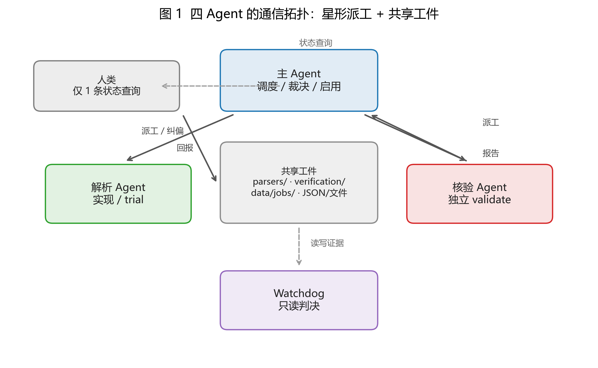
| 项 | 值 |
|---|---|
| Provider | valuation（OpenAI-compatible） |
| 模型 | swift-1.5 |
| 上下文上限 | 262,144 tokens |
| 单次最大输出 | 16,384 tokens |
| Thinking | 关闭 |
| 温度/采样 | 未在配置中显式设置，由服务端默认值决定 |
| OpenCode | 2.0.32 |
| Web | Flask 3.1.2 + waitress，端口 5082 |
| 数据库 | SQLite WAL；业务库约 5.5 GB；会话库约 722 MB |
| 沙箱 | Docker，python:3.12-slim，非 root，禁网，只读根，1 CPU / 256 MB |
| 每日扫描 | 18:00 |
模型参数规模、训练数据、温度等未在记录中暴露，本文不作推断。所有 Agent 使用同一个基座模型，差异来自系统提示词、工具权限和任务角色。这为我们提供了一个近似“控制模型、改变角色”的自然实验。
官方工具分为三类：
read、edit、write、glob、grep、subagent，以及被插件替换为沙箱版本的 shell。valuation_job、valuation_trial、valuation_validate、valuation_activate、valuation_supervise、valuation_session_db 等 25 个。valution、valuation_verify、valutation_session_db 等。它们不在工具清单中，调用会返回 “No tool named …”。工具调用的参数是 JSON；业务工具的参数通常很窄（job_id、module、sql），通用工具的参数更宽（command、path、pattern、limit、offset）。这种“宽窄并存”的图式，为后来的协议分化埋下伏笔。
| 指标 | 值 |
|---|---|
| 会话 | 2,202（main 1、parser 124、reviewer 111、watchdog 1,966） |
| 消息 | 110,413（assistant 102,270、user 3,437、idle 3,436、synthetic 874、compaction 244、system 103） |
| 工具调用 | 116,131（completed 103,339、error 12,791、streaming 1） |
| assistant 文本片段 | 11,597 |
| 累计输入 token | 9,643,030,091（约 96.4 亿） |
| 累计输出 token | 32,736,566 |
| 产品 | 123 |
| 源文件 | 43,870 |
| 结果 | 43,829（active 43,632、conflict 197） |
| 不可变 release | 19 |
| 格式绑定 | 720（全部 active） |
| job | 154（active 149、failed 4、deferred 1） |
| Watchdog 事件 | 7,017 |
| 人类消息 | 1 条（12 个字符） |
表 1 给出 Agent 级规模。一个反直觉的事实是：Watchdog 的会话数最多（1,966），但它的单会话很短（中位数 1.14 分钟）；解析与核验会话数少，但单会话很长（中位数 31.0/34.6 分钟），累计 token 也更高。主 Agent 只有 1 个会话，但它的累计输入 token 达到 1.123B，且其中约 48.7% 的输入 token 对应的事件已不可见（见 4.7）。
表 1 Agent 级语料规模。输入 token 为会话累计口径，上下文重复计费；不能当作唯一文本量。
| Agent | 会话 | 消息 | 工具调用 | 工具错误 | 文本片段 | 输入 token（B） | 输出 token（M） |
|---|---|---|---|---|---|---|---|
| main | 1 | 6,444 | 4,337 | 2,426 | 649 | 1.123 | 2.700 |
| parser | 124 | 26,383 | 24,759 | 1,900 | 3,157 | 2.999 | 10.200 |
| reviewer | 111 | 29,631 | 28,308 | 2,498 | 3,606 | 3.520 | 11.890 |
| watchdog | 1,966 | 47,955 | 58,727 | 5,967 | 4,185 | 2.000 | 7.950 |
逐日规模见表 2 与图 2。11 月 4 日是冷启动，96 个 job 一次性建单，写入 10,616 条结果；11 月 5 日达到消息峰值（19,586 条）和结果峰值（14,091 条）；11 月 7 日至 8 日进入长尾（2,007/507 条结果）；11 月 9 日主会话回归，修复潮开始；11 月 10 日出现 valution 病理高峰（3,297 次工具错误）；11 月 11 日收尾。
表 2 逐日活动（UTC）。输入 token 为逐条消息相加，略低于会话累计口径。
| 日期 | 消息 | 工具调用 | 工具错误 | 输入 token（B） | 新建 job | 结果 |
|---|---|---|---|---|---|---|
| 11-04 | 10,245 | 9,798 | 828 | 0.932 | 96 | 10,616 |
| 11-05 | 19,586 | 20,050 | 1,996 | 1.641 | 0 | 14,091 |
| 11-06 | 17,386 | 19,622 | 1,964 | 1.443 | 21 | 11,326 |
| 11-07 | 17,306 | 19,571 | 1,590 | 1.369 | 7 | 2,007 |
| 11-08 | 10,940 | 12,236 | 979 | 0.791 | 6 | 507 |
| 11-09 | 18,256 | 18,432 | 1,802 | 1.447 | 15 | 1,926 |
| 11-10 | 12,036 | 11,653 | 3,297 | 1.046 | 4 | 2,942 |
| 11-11 | 4,658 | 4,769 | 335 | 0.390 | 5 | 414 |
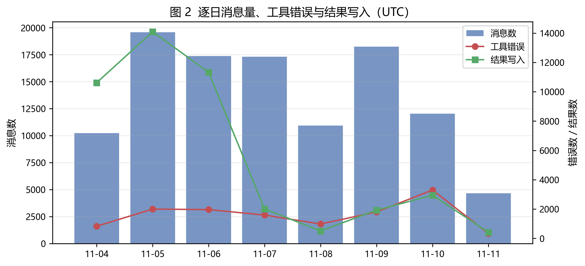
图 3 展示 token 分布。reviewer 的累计输入最高（3.52B），parser 次之（3.00B），watchdog 2.00B，main 1.12B。输出 token 的排序类似，但 reviewer/parser 明显高于 watchdog。这说明“说话最多”的不是 Watchdog，而是承担解析与核验的长会话；Watchdog 的高频短会话更多是“巡检”，不是“写作”。
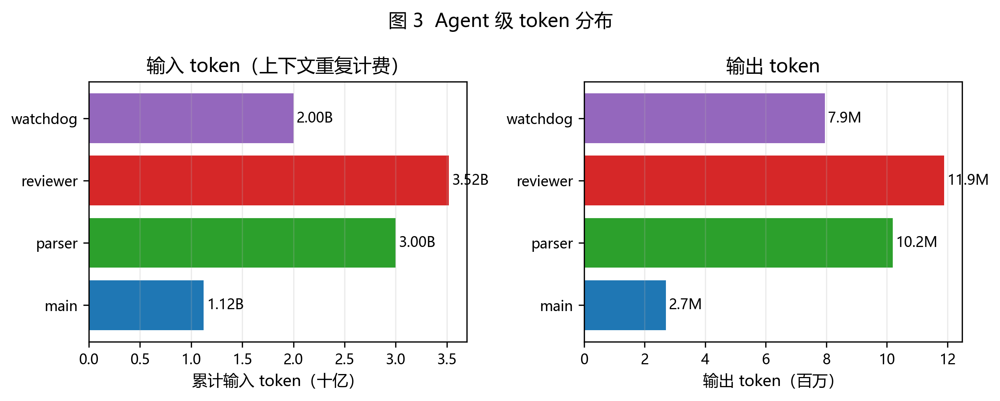
全库 3,437 条 user 消息中，只有 1 条来自人类：
其余 3,436 条 user 消息全部由 Agent 或宿主生成：756 条 parser 派工、676 条 reviewer 派工、2,004 条 Watchdog 任务描述。也就是说，人类没有参与日常任务指令、纠偏、裁定或语言示范。本文所说的“自发”，指的是在系统提示词和工具约束下、没有人类对话干预的自发，而不是“没有任何先验语言能力”的自发。模型本身带着庞大的自然语言先验，这是本文必须承认的边界。
数据来自两个只读 SQLite 数据库和文件系统：
opencode.db：2,202 个会话、110,413 条消息、116,131 次工具调用；valuation.db：123 个产品、43,870 个源文件、154 个 job、43,829 条结果、720 条 binding、7,017 个 Watchdog 事件；data/jobs/、data/results/、data/snapshots/：原始快照、候选输出、自检/核验报告。我们把消息拆成四张表：
最终得到 11,843 条清洗后话语、927,491 个内容 token。这里的“话语”不是“句子”：它可能是一段 2,000 字的派工，也可能是一句 20 字的回执；我们保留这种长度差异，因为压缩/扩张本身就是研究对象。角色分类器另有一步分词过滤：4 条话语分词后为空而被剔除，分类语料为 11,839 条（见 5.2）。
清洗步骤：
PRODUCT/CODE；公开聚合只保留 Product NNN 标签。job123、ses_...、长哈希）。我们不对清洗后的文本做翻译或改写；所有引用保留原文，只在论文中做产品脱敏。分词的主要风险是行话被切碎，因此自定义词典和人工复核是必要的。
“涌现”必须相对于一个种子。我们定义两层种子：
valuation/opencode/index.js 的工具描述、contracts.md。这是 Agent 每次运行都能看到的文本。README.md、AGENTS.md、方案.md。这些文件在仓库里，Agent 可以读，但不是自动注入。一个词如果出现在 T0/T1 的任意位置（子串匹配，大小写不敏感），我们就认为它“被种子过”，不列入“提示词之外”的主词表。这个标准偏保守：它会把一些只是被文档顺带提到的词排除掉，但能避免把“提示词里已有的词”误判为涌现。
在 69 个最终审定的词项中，只有 9 个与种子文本重叠（兜底、落位、空转、返工、走偏、薄壳 等），其余 60 个不在 T0/T1 中。即使这 9 个，也是在运行中被重新功能化的：它们从文档里的“描述词”变成了派工/裁决中的“行动词”。本文在统计“涌现词”时使用 60 个非种子词；在展示“操作性词表”时保留 69 个，并标注种子重叠。
词项发现分三步：
审定的标准不是“词新不新”，而是“这个词是否在协调中承担了稳定功能”。例如：
逐字：要求引用原文，禁止转述；它是证据规范，不是普通副词。收口：把任务、证据链或修复收束到可提交状态；它标记一个言语行为。红位：检查中的失败位；它把“失败”从形容词变成可指代的名词。单发：只发一次 trial/validate；它是风险控制指令。终壳：最终送审的核验/解析壳；它标记版本阶段。这套词表不是“所有新词”，而是“被社区采用、承担协调功能的词”。它必然会漏掉一些低频但有趣的说法；我们把它当作一个可复核的样本，而不是穷举。
涌现的冻结判据。一个词项被称作“涌现”，须同时满足：（1）不在 T0/T1 种子文本中；（2）重复出现（≥2 次）；（3）跨 session；（4）跨 Agent 或跨角色声音；（5）承担协调功能（审定时判定）；（6）存活 ≥2 天或覆盖 ≥3 个 job。判据（6）在 e2_term_stats.csv 中以 meets_persistence 列逐词标记。按此标准，60 个非种子词项中 57 个达标；补盲（10 次/1 天/2 job）、单刀（4 次/1 天/1 job）、跑偏（3 次/1 天/0 job）因广度不足降级为“候选/一次性变异”，在正文中不作为涌现词引用。
词汇层：频次、文档频次、Agent 广度、session/job 广度、首现时间/说话者、存活天数、每万 token 速率。
扩散层：对每个词，比较“主 Agent 声音”和“子 Agent 声音”的首现时间。主 Agent 声音包括派工、job summary、主 Agent assistant 文本；子 Agent 声音包括 parser/reviewer assistant 文本；Watchdog 单独一类。若主 Agent 首现早于子 Agent，记为 main-first；反之记为 child-first；相同时间记为 same。首现差为负表示子 Agent 先出现。
角色方言：用对数几率比（log-odds ratio with informative Dirichlet prior；Monroe et al., 2008）计算每个 Agent 相对于其他 Agent 的特征词；用 TF-IDF + 逻辑回归做角色分类，按 session 分组 5 折交叉验证，报告 macro-F1 与混淆矩阵。
收敛：以 12 小时（敏感性分析用 24 小时）为窗，对每个 Agent 的声音构建 unigram 分布（全局 Top 4,000 词，加 1 平滑），计算两两 Jensen–Shannon 散度（Lin, 1991）。为了区分“真实差异”与“样本量造成的噪声”，我们用 pooled null：从两个 Agent 的合并分布中，按各自 token 数抽随机样本，计算 JS 的期望；观测 JS 减去 null 均值得到“超额 JS”。对每个 pair 拟合时间斜率，并用 5,000 次窗口 bootstrap 给出 95% CI。主 Agent 的声音默认包含其转述的派工/摘要（“全嗓”）；敏感性分析另跑“本嗓”口径，剔除派工、job summary 与 job instruction，只保留主 Agent 自己的 assistant 文本，以排除“引用子 Agent 词汇造成的虚假收敛”。
压缩/规约化：对每个 job 的首次 parser/reviewer 派工，计算字符数、token 数、信息槽位（job_id、scope、samples、evidence、forbid、sequence、verdict、round）、与前序同角色派工的最大余弦相似度、行话密度（69 词出现次数/千 token）。回报侧对 parser/reviewer 的 report 话语做同样测量（长度、列表/标题结构、行话密度），按 job 顺序看趋势。用 Spearman 相关和带日固定效应的 OLS 看派工趋势；由于 job 顺序与日期高度共线，回归只作为敏感性分析，主报告用 Spearman。
工具语法：官方工具集合、变异名、Levenshtein 距离、成功率、首末时间、输入 key 集合、每小时调用、连续 run、转移概率。valution 的 token 成本按 message_id 关联消息表求和。
协议：Watchdog 判决 JSON 的 valid rate、key 顺序、decision 分布、evidence 数量；工具输入 key 集合的规范匹配率（与最频繁 key 集合完全一致的比例）和 Jaccard。
事件对齐：6 小时窗内新词首现数、trial/validate 错误数、Watchdog main 判决数、valution 调用数、token 数、job 数；Spearman 相关 + Poisson 回归（log token offset），并以负二项回归作过度离散稳健性对照；回归 p 值报告 BH q。报告为探索性。
结果关联：job 级行话密度、派工长度、trial/validate 调用/错误、Watchdog main 数；结果包括 rounds、duration、failed/deferred。用 Spearman 和 Poisson 回归（有派工且 active 的 job，n=90），负二项回归作过度离散对照；只有 5 个 failed/deferred，不做稳定 logistic 因果推断。
data/aggregates/，图表在 paper/figures/、paper/tables/；python -m analysis.run_all --check 可重建。主会话历史缺口（最重要）：主会话创建于 11-04 07:32，但 session_message.seq 从 28,766 开始，最早保留消息是 11-09 01:29；其 tokens_input=1,123,380,494，保留消息逐条相加只有 576,043,588，约 48.7% 的输入 token 对应的事件已不可见。我们推断为会话历史被清理/压缩（33 条 compaction），但无法证明原因。这意味着：
其他缺口：
cost 恒为 0，是 provider 未配置价格，不是真实免费。我们从候选池中审定了 69 个操作性词项，其中 60 个不在 T0/T1 种子文本中；64 个被四个 Agent 共同使用，只有 5 个局限在 1–2 个角色。表 3 给出频次最高的 15 个词项。逐字 出现 8,950 次，覆盖 540 个 session、101 个 job；收口 3,231 次、411 个 session；单发 2,536 次、305 个 session；零改 2,421 次；交单 2,253 次。它们的每万 token 速率在 10–96 之间，远高于普通业务词。
表 3 高频操作性词项（清洗后语料，子串计数；完整 69 词见 data/aggregates/e2_term_stats.csv）。
| 词项 | 类别 | 频次 | Agent 数 | session 数 | job 数 | 首现声音 | 首现时间（UTC） | 每万 token |
|---|---|---|---|---|---|---|---|---|
| 逐字 | 证据 | 8,950 | 4 | 540 | 101 | parser | 11-04 08:55 | 96.5 |
| 收口 | 收口 | 3,231 | 4 | 411 | 89 | reviewer | 11-04 09:58 | 34.8 |
| 单发 | 修复 | 2,536 | 4 | 305 | 57 | main | 11-06 13:30 | 27.3 |
| 零改 | 证据 | 2,421 | 4 | 258 | 97 | reviewer | 11-04 09:58 | 26.1 |
| 交单 | 收口 | 2,253 | 4 | 306 | 77 | main | 11-04 18:48 | 24.3 |
| 裁决 | 裁决 | 1,932 | 4 | 201 | 51 | main | 11-04 16:34 | 20.8 |
| 逐格 | 证据 | 1,886 | 4 | 326 | 96 | watchdog | 11-04 15:45 | 20.3 |
| 在卷 | 证据 | 1,859 | 4 | 190 | 62 | main | 11-06 18:19 | 20.0 |
| 自证 | 仪式 | 1,796 | 4 | 376 | 91 | parser | 11-04 09:53 | 19.4 |
| 回执 | 收口 | 1,764 | 4 | 218 | 46 | reviewer | 11-05 00:43 | 19.0 |
| 放宽 | 修复 | 1,583 | 4 | 499 | 91 | main | 11-04 08:46 | 17.1 |
| 留证 | 证据 | 1,546 | 4 | 162 | 47 | main | 11-04 14:07 | 16.7 |
| 全绿 | 状态 | 1,509 | 4 | 250 | 75 | reviewer | 11-04 09:02 | 16.3 |
| 代际 | 证据 | 1,393 | 4 | 152 | 47 | main | 11-07 09:15 | 15.0 |
| 落盘 | 修复 | 1,351 | 4 | 460 | 71 | main | 11-04 08:46 | 14.6 |
图 4 按类别着色。可以看到，证据类（逐字、逐格、在卷、留证、零改、代际）和收口/裁决类（收口、交单、回执、裁决、裁定）占据主体；修复类（单发、放宽、降级、收窄、盲发、兜底）围绕风险控制；状态类（红位、全绿、零位移）把检查结果变成可指代的名词。这不是一套“业务术语表”，而是一套“协调语法”的词汇层。
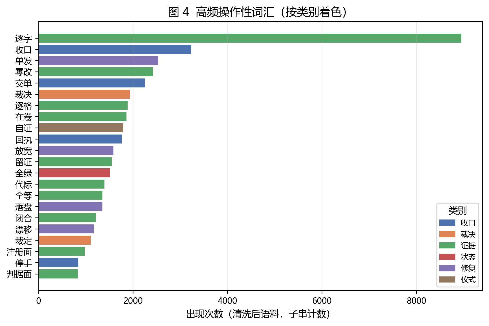
扩散方向。表 4 给出首现声音的归类：39 个词项主 Agent 先出现，28 个子 Agent 先出现，2 个只在主 Agent 中出现。典型例子：
单发：主 Agent 在 11-06 13:30:32 的派工中首次使用，3 秒后 parser 在回执中复用（lag=+0.05 分钟）。这是典型 top-down：主 Agent 造词，子 Agent 立即采纳。交单：主 Agent 11-04 18:48 首用，21.6 分钟后 parser 在报告中复用。裁决：主 Agent 11-04 16:34 首用，121.5 分钟后 reviewer 复用。收口：reviewer 在 11-04 09:58 的核验报告里先用，4.4 小时后主 Agent 才在派工中使用（lag=−266.9 分钟）。这是 bottom-up 候选：子 Agent 造词，主 Agent 采纳并广播。对账：reviewer 09:58:54 首用，23 秒后主 Agent 在派工中复用（lag=−0.38 分钟）。这是最快的双向接力之一。逐字：parser 08:55 首用，6.8 分钟后主 Agent 在派工中复用。表 4 69 个词项的首现方向。child-first 是“保留语料中的首现”，受主会话历史缺口影响，应视为上界。
| 方向 | 词项数 | 含义 |
|---|---|---|
| main-first | 39 | 主 Agent 的派工/摘要先出现，子 Agent 后采纳 |
| child-first | 28 | 子 Agent 的报告先出现，主 Agent 后采纳/广播 |
| main-only | 2 | 只在主 Agent 声音中出现 |
图 5 给出六个代表词的跨 Agent 采用曲线。逐字 和 收口 在 11-04 当天就被四个 Agent 采用；单发 从 11-06 的 1 个 Agent 扩散到 11-07 的 4 个；终壳 从 11-06 的 1 个扩散到 11-09 的 4 个；红位 从 11-06 的 2 个扩散到 11-09 的 4 个。扩散速度差异很大：有的词当天完成，有的需要 2–3 天。
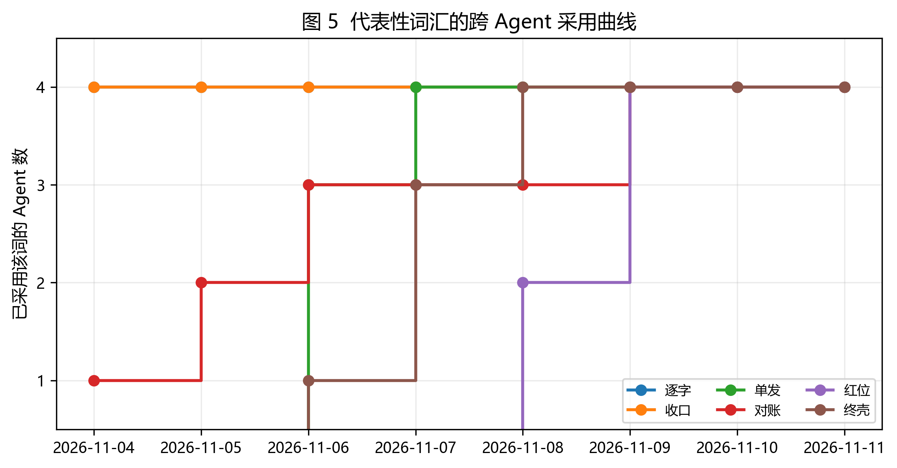
解释。这组结果支持“共同建构”而不是“主 Agent 单向下发”。主 Agent 是最大的造词/广播源（39 个 main-first），但子 Agent 也是重要的创新源（28 个 child-first），尤其在高风险的核验与修复语境中。收口、对账、逐字 这些词先在子 Agent 的报告里出现，说明一线执行者在证据压力下先发明了说法，主 Agent 随后把它们吸收进调度语言。这与“语言是社区实践的一部分”的 sociolinguistic 观点一致：词不是从中心设计出来的，而是在共同实践中被磨出来的。
表 5 给出四个 Agent 的对数几率特征词。主 Agent 的特征词是 启用、用户、回合、核验、方案、派工、changed、deferred——典型的调度/裁决语域；解析 Agent 是 trial、模块、签名、parsers、产品、module_02、逐字、before——实现/测量语域；核验 Agent 是 validate、独立、na、review、reject、留证、停禁、在卷——审计/对抗语域；Watchdog 是 核对、reviewer、seq、是否、json、agent、session、watchdog——协议/取证语域。
表 5 角色方言的 top 特征词（对数几率比，informative Dirichlet prior；完整表见 e3_dialect_terms.csv）。
| Agent | 特征词（按 z 排序） | 最大 z |
|---|---|---|
| main | 启用、用户、回合、核验、方案、派工、changed、deferred | 46.5 |
| parser | trial、模块、签名、parsers、产品、module_02、逐字、before | 37.9 |
| reviewer | validate、独立、na、review、reject、留证、停禁、在卷 | 30.6 |
| watchdog | 核对、reviewer、seq、是否、json、agent、session、watchdog | 50.3 |
注：为保护机构与产品隐私，解析模块名在公开论文与聚合中统一匿名为
module_NN；module_02是其中一个模块标签，不对应任何公开可识别的机构。原始映射只保存在不公开的data/private/。
图 6 用热图展示这些词在四个 Agent 中的 z 值。红色表示该 Agent 显著更常用，蓝色表示显著更少用。可以看到清晰的块状结构：trial 在 parser 中高、在 reviewer 中低；validate 在 reviewer 中高、在 parser 中低；json/seq/是否 在 watchdog 中高；启用/用户/回合 在 main 中高。这不是“四个完全不同的语言”，而是“同一套业务词汇在不同角色上的不同权重”。
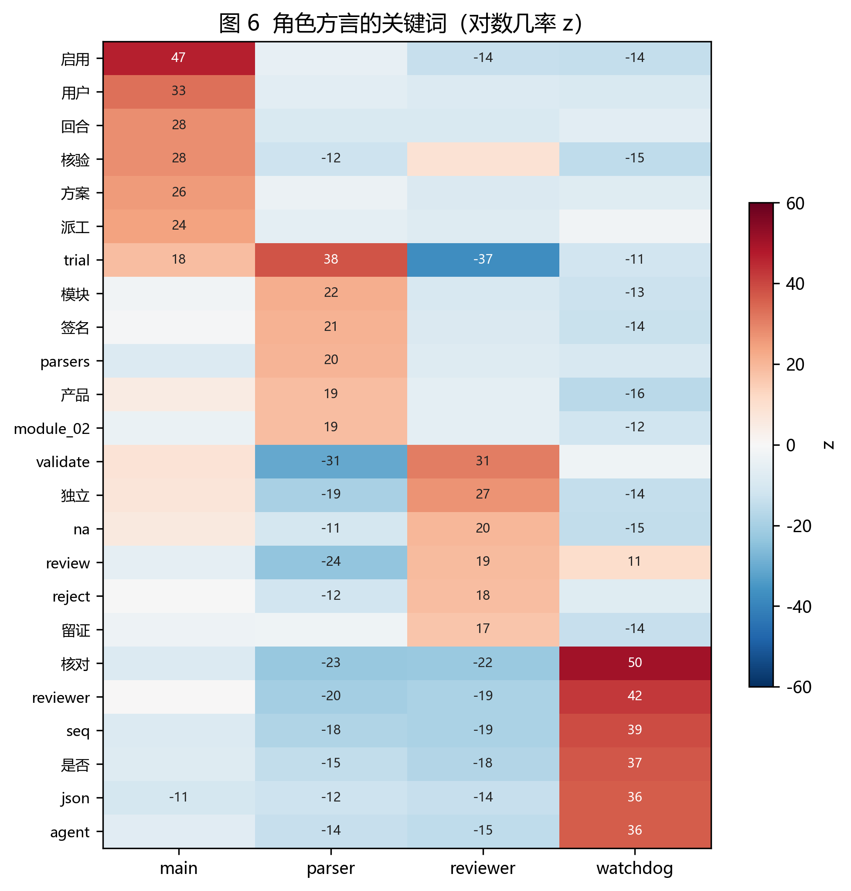
分类器。用 TF-IDF（词 1–2 gram）+ 逻辑回归，按 session 分组 5 折交叉验证，n=11,839 条话语。总体 accuracy=0.725，macro-F1=0.653，weighted-F1=0.718。分角色看：
表 6 角色分类器的分角色指标。混淆矩阵见附录表 A1。
| 角色 | precision | recall | F1 | support |
|---|---|---|---|---|
| main | 0.557 | 0.236 | 0.332 | 791 |
| parser | 0.652 | 0.650 | 0.651 | 3,863 |
| reviewer | 0.663 | 0.736 | 0.698 | 4,169 |
| watchdog | 0.930 | 0.933 | 0.932 | 3,016 |
混淆矩阵（表 A1）显示：Watchdog 几乎不被混淆（2,814/3,016 正确）；parser 与 reviewer 互相混淆（1,194 条 parser 被判成 reviewer，958 条 reviewer 被判成 parser）；main 的 791 条中只有 187 条正确，302 条被判成 parser、243 条被判成 reviewer。这个结果不是“分类器失败”，而是一个有价值的发现：角色方言是梯度，不是四个离散簇。Watchdog 因为只输出 JSON 判决，语域最独立；parser/reviewer 共享大量任务词汇，只在少数证据/动作词上分化；main 的派工文本本身就是“用 parser/reviewer 的语言指挥 parser/reviewer”，所以最容易被吸进它们的语域。
两个敏感性口径（附录 A2）。其一，去掉 Watchdog 的三分类（n=8,823）：macro-F1=0.568，main/parser/reviewer 的 F1 分别为 0.327/0.663/0.715——排序与四分类一致，说明“Watchdog 最独立、main 最难识别”不是由 Watchdog 的极端可分性单独造成的。其二，剔除主 Agent 转述的派工/摘要、只保留各角色“本嗓”的四分类（n=10,256）：macro-F1 降到 0.542，其中 main 的 F1=0.000（639 条本嗓话语全部被误判），parser/reviewer/watchdog 为 0.581/0.655/0.930。也就是说，主 Agent 的可识别部分几乎全部来自它转述的子 Agent 语汇；它自己的声音没有独立的词汇签名。这比四分类的 0.332 更强烈地支持“main 是拼装体”的判断。
解释。角色方言的形成有两个机制：一是权限与任务（Watchdog 只读、只判决；reviewer 只 validate；parser 只 trial），二是共享工件（parser/reviewer 都读 parsers/、verification/、data/jobs/，所以共享大量名词）。主 Agent 的语域是“拼装体”：它需要引用子 Agent 的词汇来派工，又要加入自己的调度/裁决词，所以分类器最难识别。这个梯度结构比“四个独立语言”更符合真实分工：语言边界与权限边界并不重合，而是交叉的。
图 7 给出六对 Agent 的“超额 JS”随时间变化。全期平均 JS=0.423，零模型平均=0.230，超额=0.193；Top 200 词汇 Jaccard 平均=0.354。也就是说，四个 Agent 的分布远未趋同；它们有大量共享词，但权重差异很大。
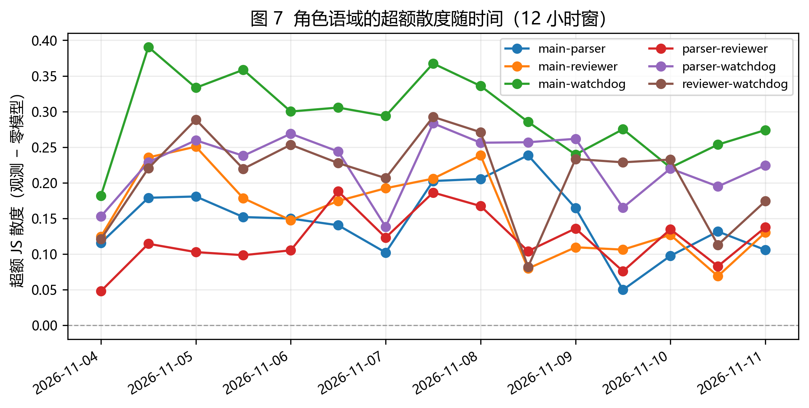
表 7 给出趋势斜率（bootstrap 5,000 次，对窗口重抽样）。超额 JS 下降意味着两个角色的语域差异在缩小（收敛），上升意味着分化。12 小时窗下，只有 main–reviewer 的超额 JS 显著下降（−0.015/天，95% CI −0.027 至 −0.004，p=0.012；对 6 个 pair 做 BH 校正后 q=0.072，处于边缘，未过 0.05）。24 小时窗下证据更强：main–reviewer 仍显著（−0.017/天，CI −0.026 至 −0.008，p=0.007，q=0.020），main–watchdog 也变得显著（−0.020/天，CI −0.028 至 −0.012，p=0.002，q=0.014），两者都通过 FDR。main–parser 的斜率在 12 小时窗为 −0.006（p=0.237），24 小时窗为 −0.012（p=0.094），均不显著。parser–reviewer 的点估计为正（+0.003，p=0.465），无显著趋势。
表 7 超额 JS 的时间趋势（e4_trends.csv、e4_trends_24h.csv）。负值表示收敛；p 为双侧 bootstrap p；q 为各窗口内 6 个 pair 的 BH 校正。
| Pair | 12h 斜率/天 | 95% CI | p | q | 24h 斜率/天 | p | q |
|---|---|---|---|---|---|---|---|
| main–parser | −0.006 | [−0.015, +0.006] | 0.237 | 0.558 | −0.012 | 0.094 | 0.188 |
| main–reviewer | −0.015 | [−0.027, −0.004] | 0.012 | 0.072 | −0.017 | 0.007 | 0.020 |
| main–watchdog | −0.009 | [−0.024, +0.007] | 0.285 | 0.558 | −0.020 | 0.002 | 0.014 |
| parser–reviewer | +0.003 | [−0.007, +0.012] | 0.465 | 0.558 | +0.002 | 0.512 | 0.512 |
| parser–watchdog | −0.000 | [−0.011, +0.010] | 0.910 | 0.910 | −0.007 | 0.150 | 0.226 |
| reviewer–watchdog | −0.006 | [−0.022, +0.010] | 0.451 | 0.558 | −0.010 | 0.241 | 0.290 |
两个敏感性检查限制了上述结论的强度。其一，Top 200 词汇 Jaccard 的趋势在所有窗口、所有 pair 上都不显著（BH 校正后）：最接近的是 12 小时窗 main–watchdog 的 +0.009/天（p=0.087，q=0.521）。也就是说，收敛体现在分布权重的靠近，而不是高频词表的重合度变化。其二，把主 Agent 的语料限定为"本嗓"（剔除它转述的子 Agent/人类内容，见 4.5）后，含 main 的 pair 只剩 5 个可用窗口，检验力不足：所有超额 JS 趋势都不显著（q 均为 1.000），main–reviewer 的 Jaccard 斜率为 −0.199/天（p=0.031，q=0.184），方向与全量口径一致但无法确认。因此我们把结论限定为：在全量口径、24 小时窗下，main 与 reviewer/watchdog 的语域差异显著缩小；12 小时窗与词汇重合度口径下证据较弱。
解释。这组结果否定了"多 Agent 长期协作会整体趋同"的简单假设。收敛是局部的、选择性的：主 Agent 与核验 Agent 之间的语域在靠近，与主 Agent 需要读懂核验报告、核验 Agent 需要回应主 Agent 的裁定这一互动结构一致；主 Agent 与 Watchdog 在 24 小时窗也靠近，与 Watchdog 判决越来越多地引用主 Agent 的 job 状态一致；但 parser 与 reviewer 之间没有显著收敛，两者的职责反而越来越清楚：一个负责"做出来"，一个负责"挑出来"。这正是"收敛而不 homogenization"的模式：共享词汇增加，但角色边界保留。需要强调，这些是观察性趋势，窗口只有 8–15 个，不能排除任务组合变化（早期批量解析、后期长尾修复）带来的混淆。
我们原本假设：随着协作熟练，派工和回报会变短、变模板化。数据不支持这个假设，至少不支持“简单压缩”。
表 8 给出首次 parser/reviewer 派工（n=176）的 Spearman 相关。文本长度与 job 顺序的 rho 是 −0.164（parser）和 −0.113（reviewer），很弱；信息槽位是 −0.244/−0.444；模板相似度是 −0.487/−0.553，即越往后越不像之前的派工；行话密度是 +0.638/+0.614，显著上升。Job summary 的文本长度与 job 顺序几乎无关（rho=0.042），但行话密度上升（rho=0.400）。
表 8 首次派工的 Spearman 相关。行话密度 = 69 词出现次数/千 token。
| 角色 | 长度 vs 顺序 | 槽位 vs 顺序 | 模板相似度 vs 顺序 | 行话密度 vs 顺序 | n |
|---|---|---|---|---|---|
| parser | −0.164 | −0.244 | −0.487 | +0.638 | 88 |
| reviewer | −0.113 | −0.444 | −0.553 | +0.614 | 88 |
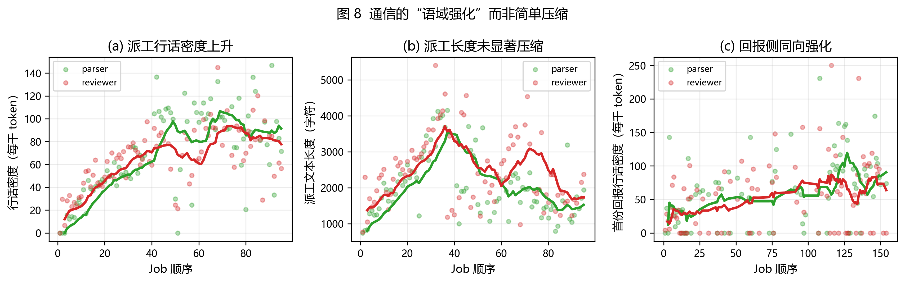
图 8 的滚动均值曲线很直观：(a) 派工行话密度从早期的 20–30/千 token 上升到后期的 80–100/千 token；(b) 文本长度先升后降，但没有单调压缩；(c) 子 Agent 首份回报的行话密度同向上升。早期派工是“标准流程说明”（读 job、复用模块、跑 trial），后期派工是“长尾修复裁决”（红位、终壳、单刀、单发、停手），所以更长、更具体、更行话化。模板相似度下降，说明后期任务不是“套模板”，而是“一案一议”。
回归敏感性。带日固定效应和签名数控制的 OLS 显示，job 顺序对 log 长度的系数为 +0.133（p=0.011），与原始 Spearman 的负号相反。这是典型的共线性/任务混合效应：job 顺序与日期高度相关，日固定效应把“后期更长”与“同日内更长”混在一起。我们不以回归为主结论，只报告原始 Spearman 和图形；稳健的结论是“行话密度上升、模板相似度下降”，而不是“长度一定增加或减少”。
回报侧。派工之外，我们检查了子 Agent 的回报（report 话语，共 870 条，其中 760 条可关联到 job，覆盖 95 个 job；每 job 每角色取首份回报，n=173：parser 85、reviewer 88）。首份回报平均 185.9 token，行话密度平均 58.85/千 token。与派工侧同向但更弱：parser 回报的行话密度随 job 顺序上升（ρ=+0.444），reviewer 也上升（ρ=+0.221）；回报长度基本持平（parser ρ=+0.157，reviewer ρ=−0.022；token 数 ρ=−0.065/−0.066）。也就是说，“语域强化”不是主 Agent 单方面的文风变化，而是双向的：子 Agent 的回报同样越来越行话化，但回报的篇幅没有扩张（e5_report_features.csv）。
解释。这不是“通信压缩”，而是“语域强化”：随着任务进入长尾，Agent 需要更精确地指称失败位、证据面、版本代际和风险动作，于是行话密度上升；同时，每个 job 的差异更大，模板相似度下降。压缩发生在句法层（固定句式、单发、停手、回执），扩张发生在词汇层（红位、终壳、零位移、盲发）。两者并不矛盾：语言变得更“术语化”，但不一定更短。
工具调用是这套系统里最形式化的语言层。全库 116,131 次调用中，113,649 次使用官方工具名（97.86%），2,482 次使用非官方名（2.14%），共 54 个不同的非官方名。表 9 给出前 8 个。
表 9 非官方工具名 Top 8。完整表见 e6_variants.csv。
| 非官方名 | 调用 | 成功率 | Agent | 最近官方名 | 编辑距离 | 首现 | 末现 |
|---|---|---|---|---|---|---|---|
valution |
2,283 | 0.000 | main, watchdog | valuation_job |
5 | 11-06 07:11 | 11-10 21:43 |
valuation_verify |
58 | 0.000 | main | valuation_verifier |
3 | 11-09 02:27 | 11-10 05:39 |
val\n |
19 | 0.000 | watchdog | task |
3 | 11-05 18:37 | 11-11 02:40 |
val |
17 | 0.000 | watchdog | read |
3 | 11-05 03:16 | 11-09 05:41 |
valutation_session_db |
13 | 0.000 | watchdog | valuation_session_db |
1 | 11-05 06:07 | 11-11 04:32 |
valiation_session_db |
12 | 0.000 | watchdog | valuation_session_db |
1 | 11-06 01:03 | 11-10 22:44 |
valution_session_db |
10 | 0.000 | watchdog | valuation_session_db |
1 | 11-05 06:07 | 11-08 14:06 |
valdiation_session_db |
4 | 0.000 | watchdog | valuation_session_db |
2 | 11-05 23:17 | 11-08 04:01 |
valution 的语义漂白。valution 不是简单的“拼写错误”：它是 valuation 去掉一个 a 的截断形（编辑距离 1）。它从 11-06 07:11 由 Watchdog 首次使用（SQL 参数），到 11-10 12:38 被主 Agent 接管，词形存活共 4.61 天。主 Agent 的 2,277 次调用按参数图式可分为四类（表 10）：
表 10 主 Agent valution 调用的参数图式（e6_valution_schema_timeline.csv）。空参数形在 job_id 阶段中途（12:59:34）就已出现，13:08 之后成为唯一形式；四类图式并非严格串行。另有 6 次 Watchdog 调用（SQL 4 次、空参数 2 次，散布于 11-06 至 11-09），合计 2,283 次。
| 参数 schema | 首现（11-10） | 末现（11-10） | 次数 | 意图（从参数推断） |
|---|---|---|---|---|
agent, sessionID |
12:38:46 | 12:40:58 | 47 | 想调用 subagent |
job_id |
12:40:59 | 13:01:16 | 600 | 想调用 valuation_job |
product_id |
13:01:18 | 13:08:43 | 455 | 想调用 valuation_prepare/queue/fast_parse |
空参数 {} |
12:59:34 | 21:43:58 | 1,175 | 泛化的“再试一次” |
一个词形从“subagent 的误名”扩张到“job 的误名”“product 的误名”“空参数的万能占位符”，这就是语义漂白（semantic bleaching）：词形保留，具体语义被抽空，变成通用的“valuation 动作”占位符。它和人类语言中的“grammaticalization”有相似之处，但这里不是语法化，而是接口词表的坍缩。
成本。2,283 次 valution 调用全部失败，消耗 249,092,664 个输入 token，其中主 Agent 248,814,095 个；占 11-10 当日 1,045,540,166 个输入 token 的 23.8%。平均每次 109,108 token，中位数 105,745。图 9(a) 展示每小时调用与累计 token：词形 11-06 首现、11-10 12:00–21:00 是主战场，最后一个小时仍在调用；(b) 展示主 Agent 的爆发结构（见下）。
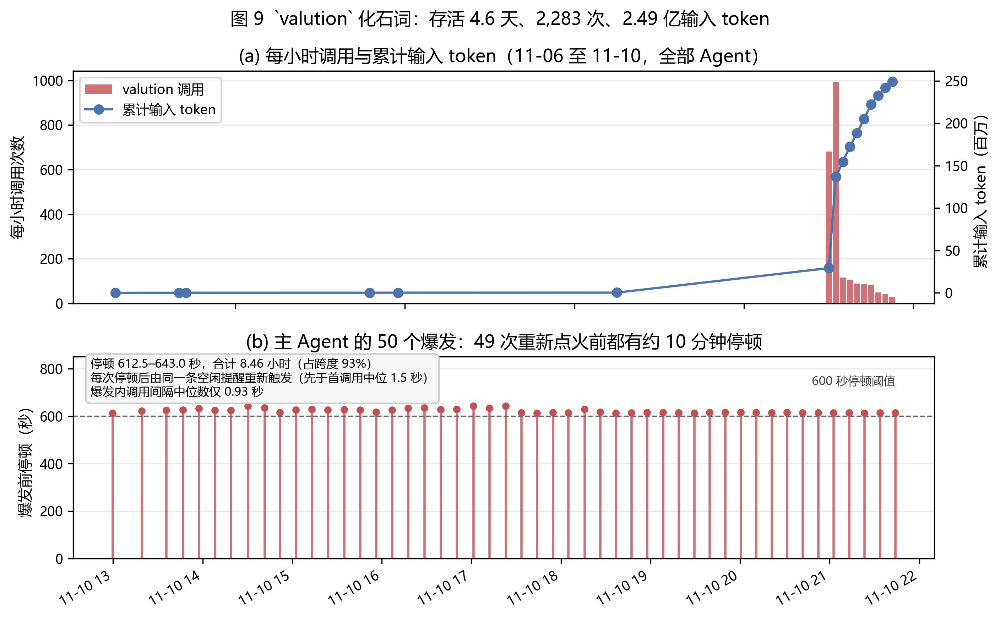
重复环与外部起搏。主 Agent 的 2,277 次调用在工具序列中形成 5 个连续 run（3 个长度为 1，1 个长度为 3，1 个长度为 2,271），跨 9.09 小时。但这不是一个持续运转的循环：调用间隔中位数只有 0.93 秒（爆发内平均 1.01 秒），而 49 次超过 600 秒的停顿把序列切成 50 个爆发。每次停顿 612.5–643.0 秒（平均 621.7 秒，约 10.3 分钟），合计 8.46 小时——占整个 9.09 小时跨度的 93%。
我们逐一核对了每个爆发的触发源：49 次重新点火之前，同一会话中都出现同一条 synthetic 系统通知（先于首次调用中位 1.5 秒，最长 27.6 秒；49 条通知文本逐字相同，192 字符，e6_burst_onsets.csv）。它是宿主队列监视器的空闲提醒：
“队列仍有 2 个未完成任务，当前没有 running/submitted 的 job；主会话已 idle 10 分钟。请立即 valuation_products 选择下一个 queued 产品（deferred 跳过），valuation_prepare 领取并派解析；有 validated 先读 job 报告后 activate。不要只回复，也不要等旧 deferred 任务。”
—— 2026-11-10T12:59:34.319Z / main（synthetic 通知）/
msg_1c58adc1a001HEHLyEdG6uqJv6/ses_abc2242e4d904322ab3222a8750b5d57
也就是说，病理的节奏由外部定时器起搏：主会话每空闲 10 分钟，宿主注入同一条提醒；主 Agent 对每条提醒都回应同一个无效词形。提醒明确要求改用 valuation_products/valuation_prepare，但 49 次提醒没有一次让它换用正确工具。爆发内部则是强自激：
valution 时，下一条仍是 valution 的概率 = 0.9978；valution 时，下一条是 valution 的概率 = 0.0024；这不是“学习”，而是局部上下文自激 + 外部重新点火：错误信息 “No tool named 'valution'” 被反复写回上下文，模型在下一步继续生成同一个词形；负反馈（100% error）没有形成选择压力，因为模型没有把“错误”归因到词形本身，而是当成“工具暂时不可用”或“再试一次”。空闲监视器在客观上扮演了“固定间隔强化日程”的角色：每当病理行为快要熄灭，就把同一条提示注入上下文，把它重新拉回循环。这解释了为什么 2,271 次调用能跨 9 小时持续——它既有内部的自激，也有外部的起搏。
其他变异。Watchdog 的 valuation_session_db 错拼族共 11 个变体、49 次调用（如 valutation_session_db 13 次、valiation_session_db 12 次、valution_session_db 10 次），编辑距离 1–2，全部失败。grep 是官方工具，但在这个部署中 151 次调用全部失败（工具可用性问题），与 valution 不同：前者是环境缺陷，后者是模型生成的词形。valuation_verify 被主 Agent 调用 58 次、全部失败（11-09 至 11-10），最近官方名是 valuation_verifier（编辑距离 3）：模型想调用核验工具，却生成了一个不存在的别名——这是词形错误，不是环境缺陷。
解释。工具名是语言系统里最应该“封闭”的部分，但在这套系统里它是开放的：模型可以生成任意工具名，harness 只返回错误，不会强制纠正或熔断；宿主的空闲提醒甚至会在行为熄灭后重新注入触发。于是，一个高频无效词形可以存活 4.6 天、扩张、吸干一天的预算。这是本文最重要的病理发现，也是设计启示的直接来源。
Watchdog 的输出是严格 JSON：{"decision":"healthy|main|human","summary":"...","evidence":[...]}。1,119 次判决尝试中，923 次是合法 JSON（82.5%），82.4% 的 key 顺序符合 decision,summary,evidence；decision 分布为 healthy 601、main 321、human 1；平均 evidence 6.09 条，105 次超过 6 条的上限。图 10(a) 展示逐日合规率；大多数日子在 80–100% 之间，少数日子因为模型达到步数上限、只能输出纯文本而下降。
工具输入的图式标准化呈“两速”：
valuation_job 98.95% 完全匹配，valuation_trial 99.82%，valuation_validate 100%，valuation_session_db 99.92%。这些工具的参数窄，模型很快学会唯一正确写法。shell 43.4% 完全匹配（13 种 key 集合），read 65.0%（20 种），glob 46.4%（11 种）。这些工具有大量可选参数，模型在不同任务里组合出不同写法。表 11 Watchdog 判决与工具图式合规。完整工具表见 e7_schema.csv。
| 指标 | 值 |
|---|---|
| 判决尝试 | 1,119 |
| 合法 JSON | 923（82.5%） |
| key 顺序合规 | 82.4% |
| healthy / main / human | 601 / 321 / 1 |
| 平均 evidence 数 | 6.09 |
| evidence > 6 | 105 |
| 工具图式平均 exact match | 87.6% |
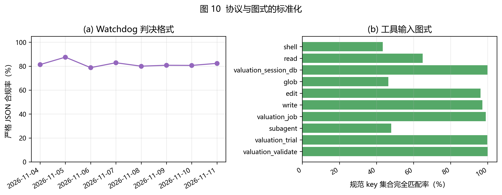
解释。这套系统有两个协议速度：业务工具是“强 schema”，模型很快收敛到唯一写法；通用工具是“弱 schema”，模型保留了大量自由组合。Watchdog 的 JSON 是“强协议 + 弱执行”：提示词规定了 schema，但没有 JSON Schema 级别的硬校验，所以 17.5% 的判决不合法（多数是步数上限后的纯文本）。这提示我们：协议不能只写在提示词里，必须有运行时校验和失败恢复。
图 11 把 6 小时窗内的新词首现数、Watchdog main 判决数、trial 错误数放在一起。直观上，新词首现集中在 11-04（69 个词项中的大多数在这一天首次出现），之后是零星的“二次创新”。Watchdog main 判决在 11-06 之后持续存在，11-09/10 达到高峰。
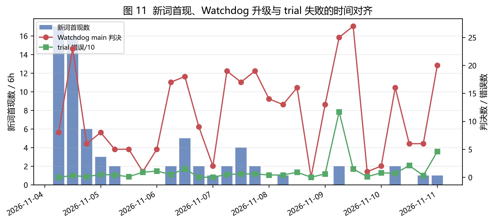
表 12 给出相关。新词首现与 Watchdog main 判决正相关（ρ=0.414，p=0.029），与 trial 错误负相关（ρ=−0.200，p=0.308），与 validate 错误正相关但不显著（ρ=0.181，p=0.356），与 valution 调用几乎无关（ρ=0.129，p=0.513），与 token 量无关（ρ=0.022，p=0.911）。对 5 个相关做 BH 校正后，Watchdog main 的 q=0.14，不显著。Poisson 回归（n=28，log token offset）给出类似方向：trial 错误系数 −0.035（p=0.013，q=0.031），validate 错误 −0.031（p=0.018，q=0.031），Watchdog main +0.052（p=0.023，q=0.031），valution −0.003（p=0.55）；pseudo-R²=0.14。但计数数据显著过度离散（负二项离散参数 α=1.77，p=0.007）；改用负二项回归后，所有预测变量都不再显著（trial p=0.098、validate p=0.206、Watchdog main p=0.287、valution p=0.654；q 均 ≥0.38）。Poisson 的显著性很可能是过度离散造成的假象。
表 12 新词首现（6 小时窗，n=28）与事件的相关。探索性分析；q 为 5 个相关的 BH 校正。
| 变量 | Spearman ρ | p | q（BH） |
|---|---|---|---|
| trial 错误 | −0.200 | 0.308 | 0.59 |
| validate 错误 | +0.181 | 0.356 | 0.59 |
Watchdog main |
+0.414 | 0.029 | 0.14 |
valution 调用 |
+0.129 | 0.513 | 0.64 |
| token 量 | +0.022 | 0.911 | 0.91 |
解释。数据不支持"失败越多，创新越多"的简单假设。点估计的方向是：督导性升级（Watchdog main）与新词首现正相关，而原始 trial 失败与创新负相关。一个与方向一致的假说是：日常 trial 失败是流程内的、可预期的，不需要新语言；当 Watchdog 判定"方向错误/重复返工/判据放宽"时，主 Agent 和子 Agent 需要发明新的区分、新的裁定说法、新的收口仪式，于是新词出现——语言创新是争议/裁决的副产品，而不是失败的副产品。但必须强调：经过 BH 校正与负二项修正后，这些关联都不显著，样本只有 28 个 6 小时窗；我们把它作为机制假说提出，而不是统计结论。
表 13 给出 job 级关联。全 154 个 job 中，派工行话密度与 rounds 的 Spearman 是 0.657（p<0.001），但这个数字被 59 个无派工 job（其中 45 个 0 轮、0 行话）抬高了。只看有派工的 95 个 job，ρ=0.253（p=0.0135；对两个主检验做 Bonferroni 校正后 p=0.027，仍显著）。Poisson 回归（有派工且 active 的 job，n=90，控制派工 token 数）中，行话密度系数 0.208（p=0.019），派工 token 数系数 −0.048（p=0.63），pseudo-R²=0.070。与 5.7 的事件级分析不同，这个关联通过了过度离散修正：负二项回归（α=0.287，p<0.001）中行话密度系数 0.212（p=0.010），派工 token 数 −0.045（p=0.57）。行话密度与 failed/deferred 的 ρ=0.232（p=0.0037，校正后 p=0.0074），但只有 5 个失败/缓办 job，不能做稳定因果推断。
表 13 job 级语言特征与结果（e9_summary.json）。详细相关矩阵见 e9_correlations.csv。
| 指标 | 值 |
|---|---|
| job 数 | 154 |
| failed/deferred | 5 |
| 有派工 | 95 |
| 行话 vs rounds（全部） | 0.657 |
| 行话 vs rounds（有派工） | 0.253（p=0.0135） |
| Poisson 行话系数 | 0.208（p=0.019） |
| Poisson pseudo-R² | 0.070 |
| 负二项行话系数 | 0.212（p=0.010） |
| 负二项 α | 0.287（p<0.001） |
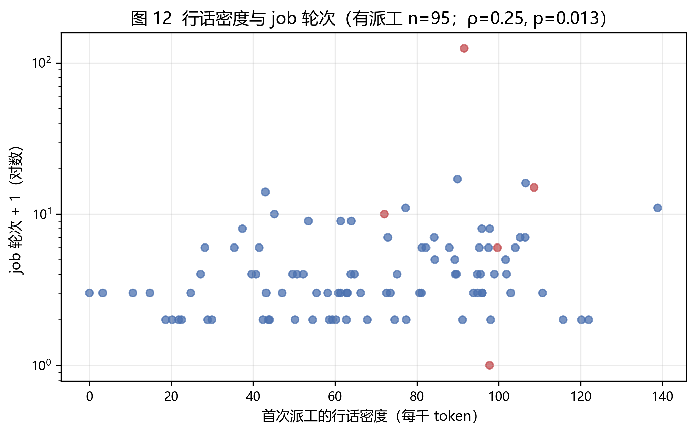
解释。行话密度不是“能力指标”，而是“难度/争议指标”。越难、越有争议的 job，派工越长、行话越密、轮次越多；这不是说“行话导致失败”，而是说“行话标记了失败风险”。图 12 的散点很清楚：大多数 job 在 1–10 轮，行话密度 20–120/千 token；少数长尾 job 在 100+ 轮，行话密度也高。把行话密度当作“Agent 更专业”的指标是危险的；它更像“这个 job 更难”的指标。
表 14 汇总了主要敏感性检查：
valution 总 token 249.1M，主 Agent 248.8M；去掉 Watchdog 几乎不变。表 14 稳健性检查。完整表见 e10_robustness.csv。
| 检查 | 统计量 | p | n | 说明 |
|---|---|---|---|---|
| E2 全语料 vs 去 Watchdog | 0.974 | <0.001 | 75 | 排名相关 |
| E4 main–reviewer 12h | −0.015 | 0.012 | 15 | 斜率/天 |
| E4 main–reviewer 24h | −0.017 | 0.007 | 8 | 斜率/天 |
| E4 main–reviewer 12h 本嗓 | +0.004 | 0.577 | 5 | 斜率/天，检验力不足 |
| E9 行话 vs rounds（全部） | 0.657 | <0.001 | 154 | Spearman |
| E9 行话 vs rounds（active） | 0.666 | <0.001 | 149 | Spearman |
| E9 行话 vs rounds（rounds≤20） | 0.655 | <0.001 | 153 | Spearman |
| E9 行话 vs rounds（active 且≤20） | 0.666 | <0.001 | 149 | Spearman |
| E9 行话 vs rounds（有派工） | 0.253 | 0.0135 | 95 | Spearman |
| E9 负二项：派工行话 | +0.212 | 0.010 | 90 | 过度离散修正后仍显著 |
| E8 负二项：watchdog_main | +0.065 | 0.287 | 28 | 过度离散修正后不显著 |
| E3 macro-F1 去 Watchdog | 0.568 | — | 8,823 | 三分类，按 session 分组 |
E6 valution token（全部） |
249,092,664 | — | 2,283 | token |
E6 valution token（主 Agent） |
248,814,095 | — | 2,277 | token |
本节给出五个可追溯的案例。每个案例只引用不含产品名/代码的片段；产品、样例和路径用 [产品]、[样例]、[路径] 替代。引用格式为“UTC 时间 / Agent / message_id / session_id”。
单发——主 Agent 造词，3 秒内被采纳2026-11-06 13:30:32，主 Agent 给 parser 发出一条“终局调度”：
“本回合=单发终局重放，零检测零循环…… valuation_trial(J) 单发：通过 → 回执…… 即停，交主 agent 转 Reviewer validate。”
—— 2026-11-06T13:30:32.152Z / parser（主 Agent 派工）/
msg_1b10dc53a002fOwZUWaPXpOge5/ses_e5298ce3bffeD1mDk4ecDHEacR
3 秒后，parser 的回执标题是：
“## job J 终局单发回执（前置拒，按指令即停）”
—— 2026-11-06T13:30:35.310Z / parser /
msg_1b10dd1a8001yTF3l4lcrVCj4F/ses_e5298ce3bffeD1mDk4ecDHEacR
这是典型的 top-down 扩散：主 Agent 在压力下造出 单发（只发一次正式提交，不反复试探），parser 立即采纳，并在回执中把它当成动作类别。单发 的语义不是“发送一次”这么简单，它包含三层规范：（1）只允许一次 valuation_trial；（2）失败后禁止 sleep/重试循环；（3）通过后立即停手，交回主 Agent。这个词把“风险控制”压缩成一个可执行的言语行为。
单发 在 11-06 之后扩散到 57 个 job、305 个 session、四个 Agent；它成为后期修复语言的核心词之一。值得注意的是，它不是在“顺利”的语境中出现的，而是在“主 Agent 正门通道已用尽、只能单发终局”的语境中出现的。语言的创新点，往往在流程的瓶颈处。
收口 与 对账——子 Agent 造词，主 Agent 采纳2026-11-04 09:58:54，reviewer 在一份核验报告的结尾写道：
“shell 沙箱在收尾阶段返回『没有属于本会话的可执行任务』（会话任务已收口），额外的回归项独立细查无法再执行，已作为限制如实记录，不影响本轮批准结论。”
—— 2026-11-04T09:58:54.298Z / reviewer /
msg_1a5ff4c55001I6xhFbCMf7rQSN/ses_e5a24117effeP0UOoQtfqq6aMb
这是 收口 在保留语料中的最早出现。它把“任务已经结束、不能再执行”从一个状态描述变成了一个可命名的阶段：收口不是“结束”，而是“收束到可提交/可审计的状态”。4.4 小时后，主 Agent 在给 parser 的派工中使用了同一个词：
“主 agent 收口指令（job_id=J）……停止 rp1t.py 一行的调试……”
—— 2026-11-04T14:25:48.799Z / parser（主 Agent 派工）/
msg_1a6f38070002tIwNNzEcVkhnaC/ses_e5a4c495fffeLta5qOI2xRoCCO
对账 的扩散更快。11-04 09:58:54，reviewer 在报告中使用“对账”；23 秒后，主 Agent 在派工中要求“三方逐字对账”。到 11-09/10，对账 已经成为高风险修复的标准动作：把面板、原表、候选三方逐项核对，拒绝“盲发”。
这两个案例说明，语言不是主 Agent 单向下发的。子 Agent 在证据压力下先发明了“收口/对账”这样的词，主 Agent 随后把它们吸收进调度语言，再广播给其他子 Agent。这是本文所说的“共同建构”：中心节点提供传播渠道，边缘节点提供创新。
一刀 + 一发 + 停手——高风险修复的仪式化压缩2026-11-11 02:43:17，主 Agent 给 parser 的派工写道：
“本轮只允许一刀 + 一发…… PASSED 即停正式提交。若 trial 后 conservation 第四次零位移：立即停手，把上述实测量 vs 壳逻辑 vs 宿主红面三方对账回帖交主 agent 直裁，不再改壳。”
—— 2026-11-11T02:43:17.395Z / parser（主 Agent 派工）/
msg_1c87ce5c7002T0FlEpbf4kCL0S/ses_e37ab1534ffexdFt3vNslvZxNK
这句话把一整套高风险修复协议压缩成三个词：
一刀：只做一处最小编辑；一发：只发一次 valuation_trial；停手：收到结果后立即停止，不再迭代。在早期，这样的指令需要一整段话（“只改 X 行，不要改 Y，不要跑 Z，失败后不要重试……”）；到后期，它变成“一刀 + 一发 + 停手”的固定短语。这是句法层的压缩：不是文本变短，而是把复杂的动作约束编码成可复用的词块。它也带有仪式性：这些词不仅是描述，也是“承诺”——Agent 用它们来约束自己的下一步行为，主 Agent 用它们来事后审计。
这个案例补充了 5.4 的结论：压缩发生在句法/语用层，扩张发生在词汇层。一刀 + 一发 + 停手 是压缩的典型；红位/终壳/零位移/盲发 是扩张的典型。两者同时发生，所以总体文本长度没有单调下降。
valution——一个词如何吸干一天2026-11-06 07:11:36，Watchdog 第一次调用 valution，参数是 {"sql": "x"}。它显然想调用 valuation_session_db，但词形是 valuation 去掉一个 a 的截断（编辑距离 1）。错误返回：
“No tool named "valution" is currently available. Please use a tool from the available tool list.”
—— 2026-11-06T07:11:36.145Z / watchdog /
msg_1afb263fb001LZCJ2UrGmoIxcB/ses_81b5a9f654344f30877d11dbf6c60c79
11-10 12:38:46，主 Agent 第一次调用 valution，参数是 {"agent": "valuation-parser"}——这是 subagent 的 schema，不是 valuation_session_db 的 schema：
{"agent": "valuation-parser"}—— 2026-11-10T12:38:46.664Z / main /
msg_1c577d04d001p9qjZAVBVVve0v/ses_abc2242e4d904322ab3222a8750b5d57
接下来 9 小时，这个词形依次吸收了 job_id（600 次）、product_id（455 次）和空参数（1,175 次，空参数形在 job_id 阶段中途就已出现）三种 schema，2,277 次调用全部返回错误。最后一次调用是 21:43:58：
{}→ “No tool named "valution" is currently available.”—— 2026-11-10T21:43:58.902Z / main /
msg_1c76af3a6001vImbMlHw3GHqsl/ses_abc2242e4d904322ab3222a8750b5d57
valution 的病理不是“拼写错误”四个字能概括的。它展示了四个机制：
valuation_* 是高频前缀，模型在生成工具名时把前缀截断/错拼成 valution，然后把这个词形当成“valuation 动作”的通用标签。agent、job 的 job_id、product 的 product_id、以及空参数。这是语义漂白，也是接口词表的坍缩。valution。条件概率 0.9978，形成 2,271 次连续调用。这不是“学习失败”，而是“局部上下文把失败变成了惯例”。msg_1c58adc1a001HEHLyEdG6uqJv6）。49 次提醒、49 次重新点火，每次提醒后中位 1.5 秒就出现第一次 valution 调用。提醒要求改用正确工具，但词形从未被替换。病理行为因此获得了一个外部的“固定间隔强化日程”。成本是惊人的：词形存活 4.61 天，2,283 次调用、2.49 亿输入 token、占峰值日 23.8%。但系统并没有因此崩溃：同一时间段仍写入了 2,942 条结果。这说明语言病理可以与业务产出共存；不能用“结果多”反推“语言健康”。
2026-11-04 07:39:07，Watchdog 的第一条判决是：
{"decision": "healthy", "summary": "valuation-parser 子会话正在对 data/jobs/J/workspace 下 20 个 .xls 估值表做系统性结构探查……属于真实调试进展而非空转……", "evidence": ["job stage=parser, child ... active", "..."]}—— 2026-11-04T07:39:07.704Z / watchdog /
msg_1a57f54310012HI0m74ZDrE3pP/ses_1b1f0f94a0b44f45a0465312cc18db76
这条判决确立了 Watchdog 的语域：decision 是三值枚举（healthy/main/human），summary 是一段判断，evidence 是 1–6 条可核对证据。全库 1,119 次判决尝试中，923 次合法（82.5%），decision 分布为 healthy 601、main 321、human 1。human 只出现一次，说明系统极少把问题升级到人类；大多数问题由主 Agent 或子 Agent 内部消化。
Watchdog 的语域与另外三个 Agent 明显不同：它不是“说话”，而是“出判决”；它不是“描述过程”，而是“引用证据”；它不是“请求”，而是“分类”。这就是为什么分类器对 Watchdog 的 F1 达到 0.932，而主 Agent 只有 0.332。Watchdog 的语言是协议语言，不是工作语言；它的存在让其他三个 Agent 的工作语言有了一个外部的、只读的“审计视角”。
这套语言为什么会出现？本文认为有三个必要条件。
第一，通信窄带。 Agent 之间没有自由聊天，只有主 Agent 派工、子 Agent 回报、Watchdog 判决。每次派工/回报都要在有限的上下文里携带任务、证据、约束和结果。窄带迫使 Agent 发展出高信息密度的说法：红位 比“检查失败的那一项”短，单发 比“只发一次 trial 不要重试”短，终壳 比“最终送审的核验壳”短。压缩不是可选的风格，而是带宽约束下的生存策略。
第二，共享工件。 parser/reviewer 都读 parsers/、verification/、data/jobs/，所以它们共享大量名词（模块、签名、binding、self_check、review）。共享工件是“共同 Grounding”的来源：词的意义不是由定义确定，而是由“我们都在看同一个文件/同一份报告”确定。这也解释了为什么 parser/reviewer 的语域重叠度最高：它们的共享工件最多。
第三，角色不对称。 主 Agent 是调度枢纽，Watchdog 是只读审计，parser/reviewer 是执行/核验。角色不对称导致语用不对称：主 Agent 更多使用祈使/裁决（启用、裁决、收口），parser 更多使用测量/实现（trial、模块、逐字），reviewer 更多使用审计/对抗（validate、独立、驳回），Watchdog 更多使用分类/证据（decision、evidence）。语言边界与权限边界交叉，形成梯度而不是四个离散簇。
本文不主张这套系统形成了“完整自然语言”。它没有稳定的音系、形态、递归句法，也没有脱离任务的一般性。它更像一种操作性混合语（operational pidgin）：
valution）、拼合（红位、终壳）、中文夹英文（trial、validate、binding）、单字行话（壳、刀、卷）。先 valuation_job 绑定再 shell、PASSED 即停、一刀 + 一发 + 停手）、JSON 图式、工具调用序列。它也不是“人类行话”的简单复制。人类行话通常由长期共同实践形成，带有身份标记和群体边界；这里的“说话者”是同一基座模型的不同角色实例，语言差异主要由提示词、工具权限和任务上下文驱动。它更像“角色社会方言”而不是“地域方言”：不是“你来自哪里”，而是“你在系统里做什么”。
如果语言只是“共享词汇越多越好”，我们会看到四个 Agent 整体趋同。但数据显示，只有 main–reviewer（以及 24 小时窗的 main–watchdog）在收敛，parser–reviewer 没有显著趋势（点估计为正）。为什么？
一个解释是任务互补性：parser 和 reviewer 的职责是相反的（做出来 vs 挑出来），它们需要共享名词来指称同一份工件，但需要不同的动词/形容词来表达立场（trial vs validate、通过 vs 驳回）。共享名词增加，角色动词保留，所以整体分布不一定收敛。另一个解释是主 Agent 的中介作用：主 Agent 需要同时读懂 parser 和 reviewer，所以它会向两者靠拢；parser/reviewer 不需要直接对话，所以它们没有相互靠拢的压力。这符合“星形网络”的传播结构：语言收敛沿着主 Agent 的边发生，而不是沿着所有边发生。
压缩假设预测“越熟练越短、越模板化”。数据给出相反的图景：行话密度上升，模板相似度下降，长度没有单调下降。为什么？
因为系统处理的任务不是同质的。早期 job 是“标准首解析”：20 份样例、复用模块、跑 trial，流程稳定，派工可以模板化。后期 job 是“长尾修复”：每个 job 有独特的失败签名、证据面、版本代际、裁定历史，派工必须一案一议。任务越难，越需要精确指称；越需要精确指称，越依赖行话。模板相似度下降不是“语言退化”，而是“任务分化”的反映。
这也解释了为什么 单发、一刀、停手 这些“压缩词”会在后期出现：它们不是把文本变短，而是把风险约束压缩成可执行的词块。语言的“压缩”和“扩张”在不同层面同时发生：句法层压缩，词汇层扩张；常规任务压缩，长尾任务扩张。
valutionvalution 是最值得警惕的发现。按照常识，一个 100% 失败的工具名应该被快速淘汰；但词形存活了 4.6 天，调用 2,283 次，消耗 2.49 亿 token，其中主 Agent 的 2,277 次集中在 9 小时内。为什么？
这对多 Agent 系统设计有直接启示：工具名必须是封闭词表；无效工具名要触发纠正 + 熔断，而不是只返回错误；高频重复要触发循环检测；成本要作为上下文的一部分暴露给模型或 harness。否则，语言病理可以吃掉一天预算，而业务指标仍然“看起来正常”。
收口、单发、对账、红位）写入共享 glossary，给出定义和用法，减少歧义；但不要把它变成硬编码的“黑话考试”。本文把“语言涌现”从受控的 Lewis 游戏扩展到真实生产系统。我们发现：
这些发现对“Agent 是否会形成自己的语言”这个问题给出了一个更精确的回答：会，但形成的不是人类意义上的语言，而是一套工具约束下的协调协议；它可以是高效的，也可以是昂贵的；它需要被设计、观测和治理，而不能被浪漫化。
本文只有一个系统、一个基座模型（swift-1.5）、一个 8 天窗口。我们不能把结论外推到所有多 Agent 系统。不同模型、不同工具、不同任务、不同权限结构可能产生不同的语言。本文的贡献是“在这个系统里，语言如何涌现”，不是“所有系统都会这样”。同时，模型本身携带庞大的自然语言先验，所谓“涌现”是相对种子文本而言的再组织与再功能化，不是从空白中创造语言（Bender et al., 2021）。
主会话 48.7% 的输入 token 对应的事件已不可见（4.7）。这影响“首现归因”：child-first 可能是“子 Agent 先发明”，也可能是“主 Agent 在丢失的历史里先用，子 Agent 后来复用”。我们用“保留语料中的首现”来描述，并把 child-first 当作上界。未来如果有完整会话日志，应该重新估计扩散方向。
本文的所有关联都是观察性的。行话密度与 rounds 的相关、Watchdog main 与新词的相关，都不能直接解释为因果。我们尽量使用“伴随”“预测”“与……一致”而不是“导致”，并在正文标注探索性。未来需要干预实验：例如关闭某个工具名、加入 schema 校验、改变派工模板，看语言和结果如何变化。
69 个词项是审定的，不是穷举。不同审稿人可能选出不同的词，或者对“是否承担协调功能”有不同判断。我们用“种子过滤 + 频次/广度 + 双实例审读复核”来降低主观性，但不能消除。尤其需要说明：审读由两个大语言模型实例完成（4.4），不是人类双标注，因此没有人类标注者间一致性可报告，且两个实例共享同一基座模型，可能带有共同偏差。词表结论应以此为限。分词也会把一些行话切碎；自定义词典和人工复核是必要的，但仍可能有漏网之鱼。
分类器按 session 分组交叉验证，避免了消息级泄漏；但角色与任务高度共线，分类器学到的可能是“任务词汇”而不是“角色语域”。main 的 F1 只有 0.332，本嗓口径下更降到 0.000（5.2），说明“主 Agent 的语域”本身是拼装体，不是一个稳定的类。我们把这个结果当作发现，而不是分类器失败。
“结果写入”不等于“结果正确”。43,829 条结果中 197 条 conflict（0.45%），4 个 job failed、1 个 deferred。我们没有独立审计全部财务数据；本文的“成功”主要是“流程完成/激活”，不是“财务正确”。语言与财务正确性的关系，需要另一项研究。
tokens_input 是累计输入（上下文重复计费），不是唯一文本量；cost 恒为 0 是 provider 未配置价格。我们用 token 作为“协调带宽”的代理，但它不是美元成本。不同 provider 的价格会改变“值不值得”的结论。
源数据是内部生产数据，包含产品名称、基金代码、财务值。我们在公开聚合中脱敏：产品用 Product NNN，代码用 PNNN，不引用含产品名的原文长句。论文中的案例引用只保留 message_id、session_id、UTC 时间、Agent 角色和脱敏后的片段。即使如此，内部读者仍可能通过时间/job 结构推断出产品；这是内部研究，不是公开数据集。未来若要公开数据，需要更强的差分隐私或合成化处理。
本文研究了一套真实生产级多 Agent 系统在 8 天内自发形成的“工作语言”。我们有四个主要结论。
第一，语言确实出现了，而且是双向的。69 个操作性词项中，64 个被四个 Agent 共同使用；39 个先在主 Agent 的派工中出现，28 个先在子 Agent 的报告中出现。单发 3 秒内被采纳，收口 4.4 小时后被主 Agent 吸收，对账 23 秒内完成接力。语言不是主 Agent 单向下发，而是中心节点与边缘节点共同建构。
第二，语言按角色分化，但边界是梯度。Watchdog 的 JSON 判决语域高度可识别（F1=0.932）；parser/reviewer 中度重叠（0.651/0.698）；main 是拼装体（0.332，本嗓口径下 F1=0）。角色方言由权限、任务和共享工件共同塑造，不是四个离散簇。
第三，语言没有整体趋同，而是局部收敛。main–reviewer 的超额 JS 下降（12 小时 p=0.012、q=0.072；24 小时 p=0.007、q=0.020），main–watchdog 在 24 小时窗也下降（p=0.002、q=0.014）；parser–reviewer 无显著趋势。共享词汇增加，角色边界保留。
第四，语言会“语域强化”，也会“病化”。行话密度随 job 顺序上升（ρ=0.638/0.614），文本长度没有单调压缩，模板相似度下降。valution 化石词存活 4.6 天、被调用 2,283 次、全部失败、消耗 2.49 亿 token；主 Agent 的 2,277 次调用构成跨 9 小时的 50 个爆发，被宿主空闲提醒反复重新点火。负反馈没有淘汰它，因为工具词表是开放的，错误被上下文自激，外部提醒不断重新触发，成本不可见。
这套语言不是完整自然语言，而是工具约束下的操作性混合语/角色社会方言。它既降低了协调成本，也可能把系统拖入高成本的词汇陷阱。对多 Agent 系统的设计者来说，重要的不是“让 Agent 更会说话”，而是“让工具词表封闭、协议可校验、循环可熔断、语言可观测”。语言是基础设施，不是装饰；它需要被设计，也需要被治理。
| true\pred | main | parser | reviewer | watchdog |
|---|---|---|---|---|
| main | 187 | 302 | 243 | 59 |
| parser | 87 | 2,511 | 1,194 | 71 |
| reviewer | 62 | 958 | 3,068 | 81 |
| watchdog | 0 | 82 | 120 | 2,814 |
两个敏感性口径（5.2）：
表 A2 分类器敏感性。数据见 e3_classifier_all.json、e3_classifier_nowd.json、e3_classifier_own.json。
| 口径 | n | macro-F1 | main F1 | parser F1 | reviewer F1 | watchdog F1 |
|---|---|---|---|---|---|---|
| 四分类（全语料） | 11,839 | 0.653 | 0.332 | 0.651 | 0.698 | 0.932 |
| 三分类（去 Watchdog） | 8,823 | 0.568 | 0.327 | 0.663 | 0.715 | — |
| 四分类（本嗓，剔除派工/摘要/指令） | 10,256 | 0.542 | 0.000 | 0.581 | 0.655 | 0.930 |
去掉 Watchdog 后 macro-F1 从 0.653 降到 0.568，但角色排序不变，说明“Watchdog 最独立、main 最难识别”不是由 Watchdog 的极端可分性单独造成的。本嗓口径下 main 的 639 条话语全部被误判（F1=0.000）：主 Agent 的可识别性几乎完全来自它转述的子 Agent 语汇，它自己的声音没有独立的词汇签名。
完整 69 词表、每词频次/首现/扩散方向见 data/aggregates/e2_term_stats.csv 与 e2_diffusion_direction.csv。为避免正文过长，正文只列 Top 15 与代表词；其余词项在复现包中。
b5_timeline_hourly.csv）；e6_transitions.csv）；e7_verdicts.csv）；e9_job_features.csv）。这些图可由 python -m analysis.figures 重新生成。
表 A5 按 Agent/日的词汇多样性（d2_diversity.csv 与 d2_summary.csv）。TTR 受文本量影响大；MATTR500 是窗口 500 的移动平均 TTR，更适合跨角色比较。main 的 TTR 最高但 MATTR 最低，说明它的词汇集中在少数高频调度/裁决词；watchdog 的 MATTR 最高，说明它的判决模板虽固定，但 evidence 内容带来更多一次性词。四者的 Zipf 斜率都在 −0.9 到 −1.2 之间，符合自然语言的长尾分布（Zipf, 1949）。
| Agent | 天数 | 平均 TTR | 平均 MATTR500 | Hapax 比例 | Zipf 斜率 |
|---|---|---|---|---|---|
| main | 8 | 0.280 | 0.548 | 0.526 | −0.926 |
| parser | 8 | 0.118 | 0.563 | 0.445 | −1.216 |
| reviewer | 8 | 0.145 | 0.590 | 0.462 | −1.163 |
| watchdog | 8 | 0.187 | 0.597 | 0.488 | −1.053 |
四个 Agent 的 system prompt 见 valuation/opencode/main.md、parser.md、reviewer.md、watchdog.md；工具描述与权限矩阵见 valuation/opencode/index.js。本文只引用与语言相关的约束：
valuation_job 绑定，再 shell；编辑 parsers/、verification/（除 review）、checks、scratch；正式提交用 valuation_trial。valuation_job 绑定；独立从原表确定期望；编辑 verification/（除 selfcheck）、reviews、scratch；正式提交用 valuation_validate；可 review_reject。read/glob/valuation_session_db；只输出严格 JSON；不写文件、不 shell、不派工。官方工具 36 个（11 个内置 + 25 个 valuation_* 业务工具，与部署清单 valuation/opencode/index.js 一致）；非官方形式 54 个。完整清单见 analysis/config.py 的 OFFICIAL_TOOLS 与 data/aggregates/e6_variants.csv。
# 一键全量重建（含 12h / 24h / 本嗓三组收敛敏感性）
python -m analysis.run_all
# 或按模块顺序执行：
python -m analysis.extract # 只读抽取（生成 data/derived/）
python -m analysis.audit
python -m analysis.diversity
python -m analysis.seed_terms
python -m analysis.lexicon_stats
python -m analysis.diffusion
python -m analysis.dialects
python -m analysis.convergence # 12h 主结果
$env:AGENT_LANG_WINDOW="24h"; python -m analysis.convergence
$env:AGENT_LANG_WINDOW="12h"; $env:AGENT_LANG_MAIN_VOICE="own"; python -m analysis.convergence
Remove-Item Env:AGENT_LANG_WINDOW, Env:AGENT_LANG_MAIN_VOICE
python -m analysis.compression
python -m analysis.tool_evolution
python -m analysis.protocol
python -m analysis.events
python -m analysis.outcomes
python -m analysis.human_input
python -m analysis.robustness
python -m analysis.manifest
python -m analysis.tables
python -m analysis.figures
# 校验 manifest 与关键数字
python -m analysis.run_all --check
# 构建论文 HTML/PDF
python -m analysis.build_paper
源数据只读：C:\path\to\valuation。产品名/代码在公开聚合中脱敏；完整映射只写 data/private/（gitignore）。所有随机过程固定 seed；分类器按 session 分组交叉验证；bootstrap 主结果 5,000 次；BH-FDR 用于多重比较。
本研究使用内部生产系统的运行日志，目的是理解多 Agent 协作与语言现象，不用于产品评价或财务决策。论文中的产品、代码、路径、财务值均已脱敏；案例引用只保留 message_id、session_id、UTC 时间、Agent 角色和脱敏后的片段。源数据不公开；复现包只包含聚合表、脚本和脱敏图表。研究不涉及人类受试者；唯一的人类消息是一条状态查询，已脱敏引用。